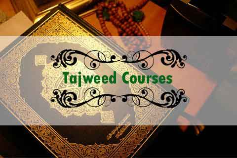
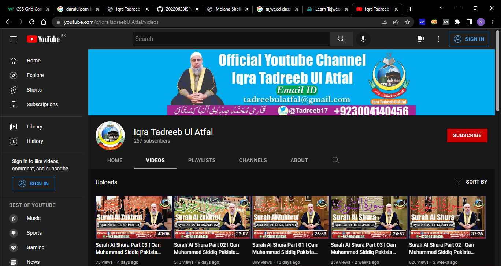

اقراء تدریب الاطفال (ٹرسٹ) لاہور
شعبہ حفظ

قرآن کریم دین اسلام کی اساس ہے۔ جامعہ دارالعلوم کراچی میں قرآن مجید ناظرہ اور حفظ کی تعلیم کا اعلیٰ پیمانے پر انتظام کیا گیاہے بلکہ شہر کے مختلف علاقوں میں بھی دارالعلوم کی طرف سے تقریباً ستائیس مکاتبِ قرآنیہ قائم کئے گئے ہیں۔
شعبہ ناظرہ

مرحلہ متوسطہ کا تعلیمی دورانیہ پانچ سال کا ہے ۔ مرحلۂِ متوسطہ کے سالِ اوّل میں صرف ایسے درخواست گزاروں کو امتحانِ داخلہ میں شامل کیا جاتا ہے، جو پنجم جماعت تک ابتدائی تعلیم کی عمدہ استعداد رکھتے ہوں یا حافظ قرآن ہوں اور چہارم جماعت کے معیار پر ریاضی، اُردو اور انگریزی سے واقف ہوں۔
شعبہ تجوید

مرحلہ متوسطہ کا تعلیمی دورانیہ پانچ سال کا ہے ۔ مرحلۂِ متوسطہ کے سالِ اوّل میں صرف ایسے درخواست گزاروں کو امتحانِ داخلہ میں شامل کیا جاتا ہے، جو پنجم جماعت تک ابتدائی تعلیم کی عمدہ استعداد رکھتے ہوں یا حافظ قرآن ہوں اور چہارم جماعت کے معیار پر ریاضی، اُردو اور انگریزی سے واقف ہوں۔
یوٹیوب چینل

پوری دنیا میں میں پہلی مرتبہ یوٹیوب پر قرآن مجید باقاعدہ ترتیل کے ساتھ پڑھا جا رہا ہے۔ صرف اور صرف ہمارے پلٹ فارم سے اللہ تعالٰی اس کو قبول فرمائے۔آمین
ہمارے یوٹیوب چینل کو وزٹ کرنے کیلئے یہاں کلک کیجئےشکریہ
حفظ آنلائن

عربی و دینی علوم کا آٹھ سالہ نصاب جو ’’درس نظامی‘‘ کہلاتا ہے، یہ نصاب دو دو سال پر مشتمل چار مراحل کی شکل میں ہے، عامہ، خاصہ، عالیہ اور عالمیہ۔ ہر دوسرے سال وفاق کا امتحان لیا جاتاہے۔
ہوم ٹیوشن سروس

اس شعبہ کا بنیادی مقصد اسلامی معاشی نظام کا احیاء اور فروغ ہے تاکہ جو بینکار پاکستان اور پوری دنیا کے اسلامی بینکوں میں کام کر رہے ہیں ان کو اسلامی نظام معیشت کی تربیت فراہم کی جائے۔